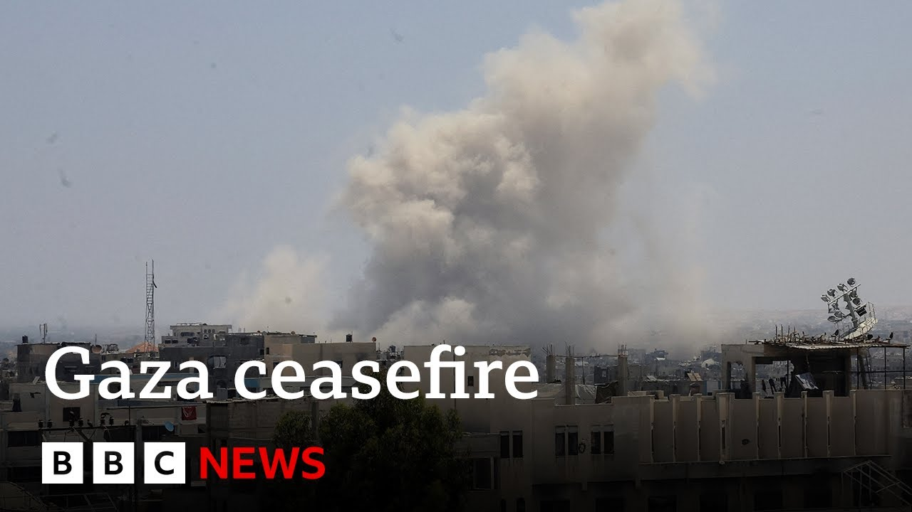

【BBC News 20250703 美国总统特朗普表示以色列已同意加沙60天停火条件】
Summary: A potential Middle East breakthrough: Trump confirms Israel agreed to a 60-day Gaza ceasefire ahead of Netanyahu's Washington visit, though Hamas' response remains uncertain amid past failed attempts and complex deal terms.
摘要： 中东局势可能出现突破：特朗普证实以色列同意加沙60天停火，内塔尼亚胡即将访美，但哈马斯尚未回应，此前停火尝试多次失败，协议条款复杂。

⏱️ Estimated Reading Time: 7 min
📚 四级生词 📚 六级生词 📚 雅思生词 📚 托福生词 📚 专八生词 📚 SAT生词 📚 考研生词 📚 GRE生词 📚 高考生词
In what could be a significant development in the Middle East, President Trump has confirmed that Israel has agreed the necessary conditions for a 60-day ceasefire in Gaza just days before Benjamin Netanyahu is due to visit Washington.
中东局势可能出现重大进展，特朗普总统证实以色列已同意加沙60天停火的必要条件，而内塔尼亚胡即将在几天后访问华盛顿。
In a message on his Truth Social account, Mr. Trump said, "We will work with all parties to end the war.
特朗普在其Truth Social账号上发文称：“我们将与各方合作结束战争。
I hope for the good of the Middle East that Hamas takes this deal because it will not get better.
为了中东的利益，我希望哈马斯接受这一协议，因为形势不会好转。
It will only get worse."
只会变得更糟。”
Hamas has yet to respond to the proposed deal and it remains unclear whether the militant group will agree to the conditions.
哈马斯尚未对提议的协议作出回应，目前尚不清楚该武装组织是否会同意这些条件。
Previous attempts to broker a ceasefire have been rejected.
此前斡旋停火的尝试均遭拒绝。
I asked our North America correspondent Arunade Mukajji if there were any additional details about the terms of this potential deal.
我询问了北美记者阿鲁纳德·穆卡吉关于该潜在协议条款的更多细节。
what these necessary conditions are that Israel has agreed to is something that we still don't have details about and whether these same necessary conditions will be acceptable to Hamas is going to be critical for this deal to actually work and hold and be a success.
以色列同意的必要条件具体内容尚不明确，而这些条件能否被哈马斯接受对该协议能否真正生效并取得成功至关重要。
As you pointed out in the past also there have been attempts several attempts uh but they have fallen through uh at the last moment many times.
正如你过去指出的，已有多次尝试，但往往在最后时刻失败。
So this time however things are different in the sense uh that there is considerable pressure with Donald Trump really wanting to get this deal done.
但这次情况不同，因为特朗普迫切希望达成协议，施加了巨大压力。
In fact uh as that message on truth social he said that things are only going to get worse.
事实上，他在Truth Social的发言中称形势只会恶化。
Uh what is also important to understand is that the statement is coming just less than a week till Prime Minister Benjamin Netanyahu will be meeting President Donald Trump on Monday here in Washington DC.
另一关键是，该声明发布时距离内塔尼亚胡总理周一在华盛顿与特朗普会晤仅不到一周。
President Trump made it very clear that he's going to be very uh uh very very stern and strict about you know about the situation there in the Middle East.
特朗普明确表示将对中东局势采取极其强硬的态度。
So it remains to be seen how this really plays out.
因此实际进展仍有待观察。
But Donald Trump also highlighting the fact that the uh the mediators that is Egypt as well as Qatar will be delivering this message and they really hope that Hamas takes this because as as as he said himself uh that this is the only option things could get worse.
但特朗普也强调，调解方埃及和卡塔尔将传递这一信息，他们真心希望哈马斯接受，因为正如他所说，这是唯一选择，否则局势会恶化。
D Mukaj in D Mukaj in Washington.
华盛顿的D·穆卡吉报道。
And let's talk to our correspondent Wura Davis who's in Jerusalem.
现在连线耶路撒冷记者乌拉·戴维斯。
And Wura, what if anything has Israel said about this possible deal and and what might be in it?
乌拉，以色列对此潜在协议有何表态？协议可能包含哪些内容？
Well, there's little news coming out of Israel itself this morning, but Israel's chief negotiator Ron Durn has been in the United States this week and he will have been the one who have been hammering this out with American officials.
今晨以色列方面消息不多，但以方首席谈判代表罗恩·德恩本周在美国，正是他与美方官员敲定协议细节。
Now, of course, Donald Trump has been putting pressure on all sides, even his close friends, the Israelis, to end the fighting and come up with a ceasefire.
当然，特朗普一直在向各方甚至盟友以色列施压，要求结束冲突并达成停火。
But the devil will really be in the detail.
但关键在于细节。
What most Israelis will be looking at is how many of the remaining hostages, about 23 of them, are still thought to be alive.
以色列民众最关注的是约23名剩余人质中预计仍有生还者的数量。
How many of those would be released under a 60 se 60-day ceasefire agreement?
60天停火协议将释放其中多少人？
uh Hamas negotiators when they get to see the deal, the key thing for them will be whether a 60-day ceasefire translates into a long-term peace agreement.
哈马斯谈判代表审视协议时，核心在于60天停火能否转化为长期和平协议。
They don't want a return to fighting after 60 days.
他们不希望60天后战火重燃。
And also whether it includes as well at the very least a partial withdrawal of Israeli troops from parts of Gaza.
以及协议是否至少包含以军从加沙部分撤军。
And finally, perhaps from a more international perspective, it's the allowing of unfettered aid in not through the controversial Gaza Humanitarian Foundation, that Americanrun organization that has been much criticized, but that would allow the UN, the World Health Organization, the World Food Program, all of those people to take aid in, as was the case under the last ceasefire.
最后从国际视角看，关键是允许援助物资不受阻碍地进入——不通过备受争议的美国运营组织“加沙人道基金会”，而是像上次停火期间那样由联合国、世卫组织、世界粮食计划署等机构输送。
So, a lot of details there.
因此存在大量细节问题。
Um, but um you know, as Donald Trump seems to have said, um it's a take it or leave it deal perhaps for Hamas.
但正如特朗普所言，这对哈马斯可能是“要么接受要么放弃”的协议。
If they don't agree to it, then one assumes the fighting will continue.
若哈马斯拒绝，冲突很可能持续。
And Mura, there has been increased military action in Gaza by Israel.
穆拉，以色列在加沙的军事行动有所升级。
What is the latest on what it is doing?
最新动态如何？
Yeah, there's news again of very intense overnight air strikes in Gaza.
是的，据报道加沙夜间再遭猛烈空袭。
We haven't got the exact details of where those have happened, but that's part of a developing pattern this week.
具体地点尚不明确，但这是本周持续升级的态势之一。
The Israelis issued uh and are continuing to issue unprecedented evacuation orders for Palestinians, particularly in the east of Gaza City, to move to so-called safe zones.
以方正持续发布史无前例的撤离令，要求加沙城东部巴勒斯坦人迁至所谓“安全区”。
But the reality is that nowhere in Gaza is safe.
但现实是加沙没有安全之地。
Say the UN and say say Palestinian officials, many of the so-called safe zones have been targeted themselves.
联合国和巴勒斯坦官员称，多个“安全区”本身也遭袭。
So people are being told to move from parts of Gaza City to the west and those areas continue to come under Israeli air strikes.
民众被告知从加沙城西部撤离，而这些区域仍遭以军空袭。
We're a Thank you very much.
非常感谢。
We're a Davis in Jerusalem.
耶路撒冷的乌拉·戴维斯报道。